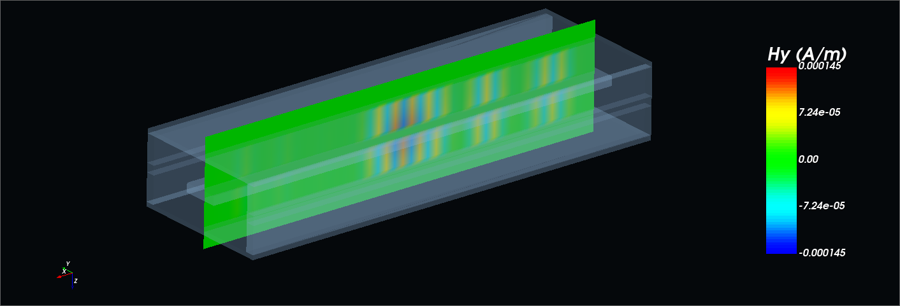
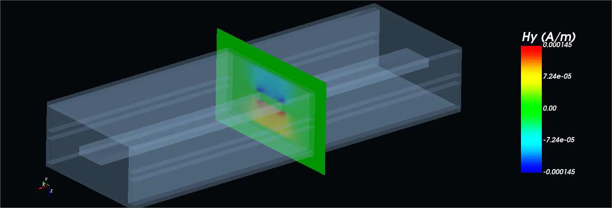
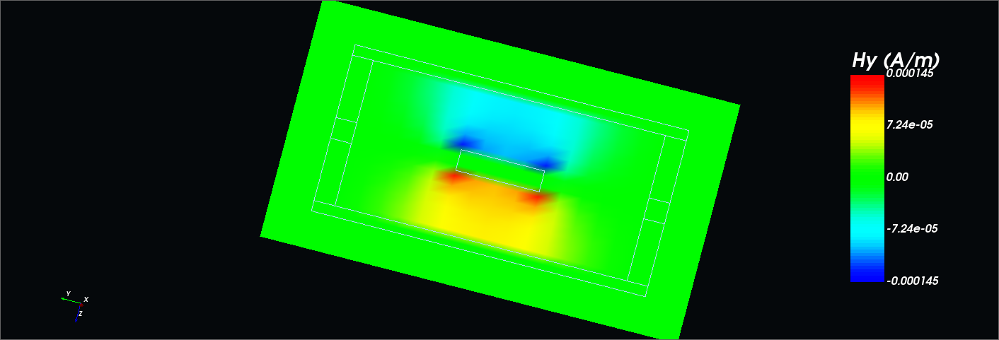
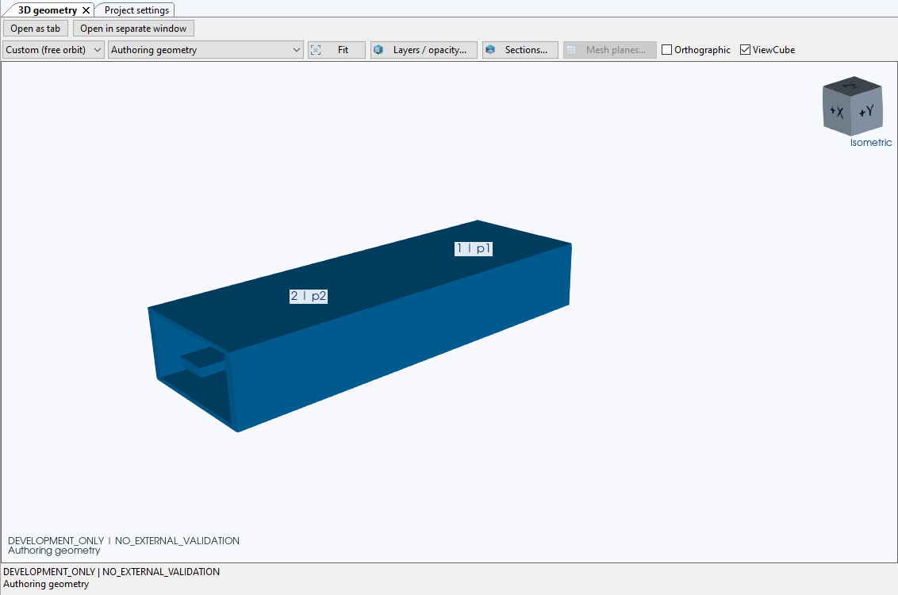
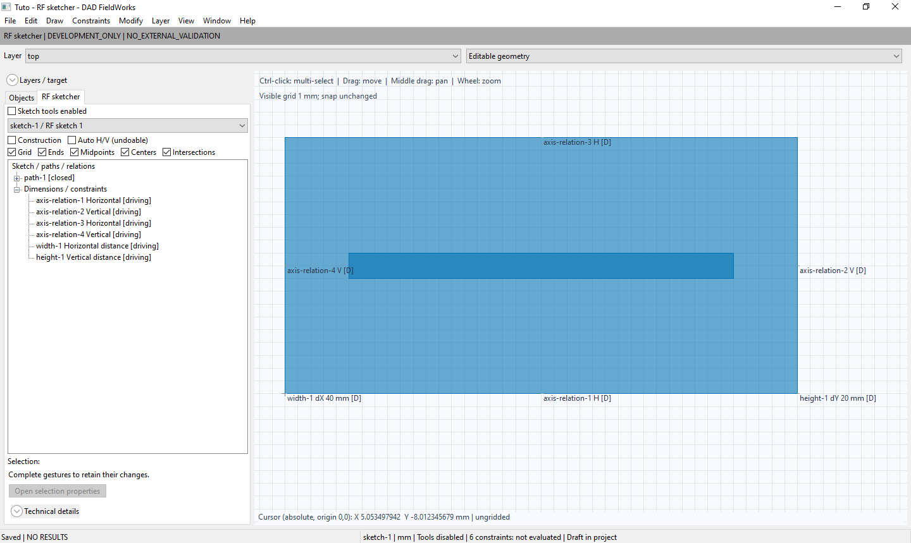
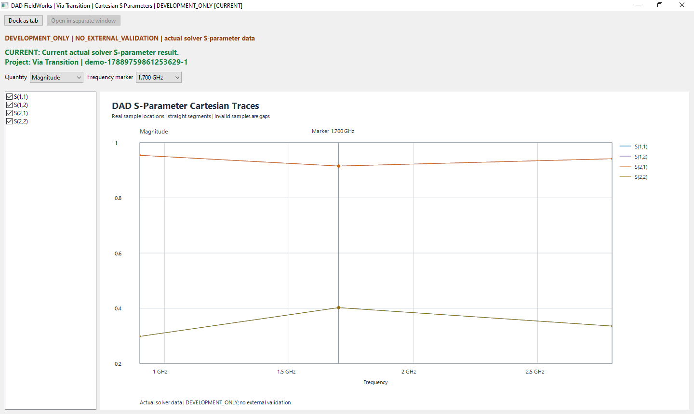

Electromagnetic simulation
We work on numerical tools for investigating how electric and magnetic fields behave in PCB and RF structures.
 DigitalArtDeco Labs
DigitalArtDeco Labs
DigitalArtDeco Labs · Scientific software
DigitalArtDeco Labs develops scientific software for RF engineering and electromagnetic analysis. We connect numerical methods with practical engineering workflows and clear technical visualization.
Our work is directed at RF, microwave, signal integrity and PCB engineers who need to understand how a structure affects a signal.
Our focus
We develop software around the relationship between a physical model and its calculated response. The aim is to make that relationship easier to inspect, discuss and revisit.
We work on numerical tools for investigating how electric and magnetic fields behave in PCB and RF structures.
We bring model construction, calculation settings and results into a connected project, so engineers can keep the inputs alongside their results.
We develop views for examining port responses and field distributions. Different views help engineers ask different questions about the same calculation.
Our software project
DAD FieldWorks brings PCB geometry editing, material and layer definitions, electromagnetic calculations and result inspection into a Windows desktop workspace.
Edit supported structures, inspect them in 3D and configure ports and calculations. Review calculated port responses and saved field components while managing projects and their associated results.
DAD FieldWorks is in development. The images show the current application.
Model geometry and saved field components share one view. Transparent surfaces and section contours show where the field distribution lies within the modeled structure.

Saved H_y field component on a longitudinal slice through the shielded reference line, shown with transparent model geometry.
View image: Fields within the model
A transverse H_y slice located within the transparent geometry of the same reference model.
View image: A section in its spatial context
Section contours show the conductor boundaries alongside the signed H_y field distribution.
View image: Field distribution and geometry contours
The shielded TEM reference line in the DAD FieldWorks workspace. Cropped application view.
View image: The reference modelDevelopment views from the Uniform Shielded TEM Reference Line. The three field images show signed H_y in A/m at one saved time step in different views, not a time sequence. Their previews are viewer excerpts; open each image for the application controls. The geometry is the editable model, not solver cell occupancy.
The Tuto example shows construction. The Cartesian plot shows Via Transition. The Smith chart shows the Uniform Shielded TEM Reference Line, a different project.

Tuto: define geometry and dimensional relations in the RF sketcher.
View image: Dimensioned geometry
Via Transition: compare reflection and transmission magnitudes at the available frequency samples.
View image: Reflection and transmission
Uniform Shielded TEM Reference Line: S(2,2) in the Smith chart, with reflection and impedance readouts at 5.500 GHz and optional wavelength scales.
View image: Reflection and impedanceThe field images are saved time-domain views, not fields at the frequency selected in either plot. The Cartesian plot shows linear magnitude, not dB. Its project and frequency samples differ from the Smith view.
For the supported scope and validation limits, see the technical product notes.
Development direction
We plan to extend the range of structures and investigations supported by our software. These are development goals, not a list of capabilities available today.
Contact
We welcome conversations about PCB and RF modeling, scientific software and potential collaboration. Tell us about your technical interests, a structure you are studying or a validation case.
This is an invitation to discuss our work, not an offer of immediate software access.